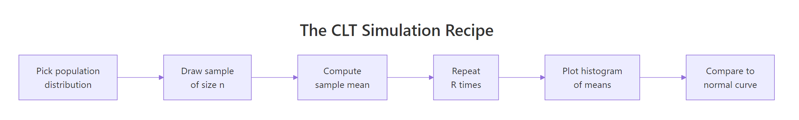

Central Limit Theorem Exercises in R: 8 Simulation Practice Problems, Solved Step-by-Step
These 8 central limit theorem exercises in R let you watch sample-mean distributions converge to normal, starting from uniform, exponential, and bimodal populations, with full runnable solutions. Every problem has a scaffold, a hint, and a reveal so you can check your answer the moment you finish coding.
How do you simulate a sampling distribution in R?
Every central limit theorem problem boils down to the same five-step recipe: pick a population, draw a sample of size n, take its mean, repeat the draw thousands of times, then plot the collected means. One runnable block captures all five steps on a uniform population so you can see the payoff, a near-bell-shaped histogram, before tackling any of the 8 problems.
The population is flat between 0 and 1, yet the histogram of 10,000 sample means centres on 0.5 and takes on a clean bell shape. The observed spread 0.0527 matches the CLT prediction sqrt(1/12)/sqrt(30) = 0.0527 almost exactly. Swap the population or the n and only the numbers change, the shape stays normal.

Figure 1: The five-step CLT simulation recipe used in every problem below.
mean(runif(n)) R times and collects the results into a vector, replacing a for-loop with a single readable line. Every exercise in this post uses the same pattern.Try it: Generate 5000 sample means from runif(50) (n=50) and store them in ex_means. Then print mean(ex_means) and sd(ex_means). The sd should be noticeably smaller than the n=30 case above.
Click to reveal solution
Explanation: Larger n shrinks the sampling-distribution spread by a factor of sqrt(n). Going from n=30 to n=50 scales sd by sqrt(30/50) = 0.775, so 0.0527 × 0.775 ≈ 0.0408, matching the observed 0.041.
How do you check if the sample means look normal?
Three quick checks tell you whether CLT has "kicked in" for a given n: plot the histogram, overlay the theoretical normal curve, and draw a Q-Q plot. The histogram gives you the gestalt, the overlay shows whether the peak height and tails match, and the Q-Q plot reveals subtle deviations in the extremes.
The blue curve tracks the histogram bars tightly from shoulder to shoulder, confirming that n=30 from a uniform population is already in the CLT regime. If the overlay sat above the bars on one side or below on the other, you'd suspect a skewed population needing larger n.
The points trace the reference line almost perfectly, with no curvature at the ends. A Q-Q plot is the pickiest normality check you have, any U or S shape means the tails of the sample-mean distribution are not yet normal.
freq = FALSE when overlaying a density curve. The default hist() y-axis is raw counts, which will not match a density curve scaled to area 1. Pass freq = FALSE and the histogram becomes a density, letting you overlay dnorm() directly.Try it: Draw a Q-Q plot for your ex_means from the previous exercise. Does the line look straight? What does a curve at the top-right corner tell you about the sampling distribution's right tail?
Click to reveal solution
Explanation: With n=50 from a symmetric uniform population, the Q-Q plot is essentially a straight line. Curvature at the top-right would signal a heavier-than-normal right tail, you'd then try a larger n before trusting CLT.
What standardisation pattern do all CLT problems share?
Every CLT problem, probabilities, confidence intervals, hypothesis tests, reduces to a single standardisation step. If the population has mean $\mu$ and standard deviation $\sigma$, then for large n the sample mean $\bar{X}$ follows approximately $\text{Normal}(\mu, \sigma/\sqrt{n})$. Standardising flips that into a problem about $\text{Normal}(0, 1)$, which you solve with one pnorm() call.
$$Z = \frac{\bar{X} - \mu}{\sigma / \sqrt{n}}$$
Where:
- $\bar{X}$ = the sample mean (the thing you observed or simulated)
- $\mu$ = the population mean (known or assumed under CLT)
- $\sigma$ = the population standard deviation
- $n$ = the sample size used for each mean
- $Z$ = the standardised statistic, approximately $\text{Normal}(0, 1)$
The standardised vector has mean near 0 and sd near 1, exactly the target, and the histogram now matches the dnorm(x) curve directly, with no parameter tuning. Every exercise below reuses this trick: simulate, then standardise, then invoke pnorm() to extract probabilities.
Try it: A population has $\mu = 100$, $\sigma = 15$. You observe a sample of n = 25 with mean 104. Compute the Z-score in one line.
Click to reveal solution
Explanation: The observed mean sits 1.33 standard errors above the population mean. Under CLT, pnorm(1.333, lower.tail = FALSE) ≈ 0.091 is the probability of seeing a sample mean that large or larger if the null $\mu = 100$ is true.
Practice Exercises
Work through the 8 problems in order, they escalate from a basic uniform simulation to writing your own reusable simulator. Each scaffold is runnable as-is so you can iterate, and each reveal shows one clean way to solve it. Your answers may differ slightly in simulation noise, that is expected.
Exercise 1: CLT from a Uniform(0, 1) population
Draw 10,000 replicates of sample means from runif(40) and save them to means_unif. Report mean(means_unif) and sd(means_unif). Compare them to the CLT predictions: population mean is 0.5 and standard error is sqrt(1/12)/sqrt(40).
Click to reveal solution
Explanation: The simulated mean is essentially 0.5 and the simulated sd 0.0456 matches the theoretical SE = 0.0456 to three decimal places. A symmetric population like Uniform(0,1) reaches the CLT regime very quickly, n=40 is overkill here.
Exercise 2: CLT from an exponential (heavily skewed) population
Repeat the recipe with rexp(40, rate = 1). The exponential is strongly right-skewed (its mean equals its sd, both equal 1/rate), so it's the stress test for CLT. Save your means to means_exp, then compare to theoretical mean 1 and SE 1/sqrt(40).
Click to reveal solution
Explanation: Despite the wildly skewed population, the histogram of 10,000 sample means is near-normal at n=40. The simulated SE 0.157 matches the theoretical 0.158. Skewed populations need larger n than symmetric ones, but 40 is already plenty for exponential.
Exercise 3: How sample size controls CLT convergence
For a fixed exponential(rate=1) population, compute three vectors of 10,000 sample means with n = 5, n = 30, and n = 100. Plot all three histograms side by side using par(mfrow = c(1, 3)). Watch how the spread shrinks and the skew disappears as n grows.
Click to reveal solution
Explanation: The three standard deviations 0.45, 0.18, 0.10 follow the 1/sqrt(n) shrinkage law almost exactly, multiplying n by about 4 halves the SE. The n=5 histogram still shows the exponential's right skew bleeding through; n=30 is visibly symmetric; n=100 is textbook normal.
n is enough because the population has no finite variance.Exercise 4: CLT from a bimodal mixture population
Build a bimodal population by mixing two normals: half the values come from rnorm(.,mean = -2, sd = 1), half from rnorm(., mean = 2, sd = 1). For n = 50 and R = 10000, show that the sample mean distribution is still unimodal and approximately normal, even though the population has two peaks.
Click to reveal solution
Explanation: The population has two clear peaks but the sample mean distribution is single-peaked and bell-shaped. This is CLT at its most striking, the shape of the population is irrelevant as long as the variance is finite. The observed sd 0.2246 matches the theoretical 0.2236 to three decimals.
Exercise 5: Approximate P(X̄ > c) using simulation and CLT
Using means_exp from Exercise 2, estimate the probability that the sample mean exceeds 1.2. Compute this two ways: (a) the empirical proportion in the simulation, (b) an analytical CLT approximation with pnorm(). The two should agree within simulation noise.
Click to reveal solution
Explanation: The empirical probability 0.102 and the CLT approximation 0.103 agree to three decimals. In practice you rarely simulate, you'd use pnorm() directly, but simulating first is how you verify that CLT applies to your problem before trusting the one-line formula.
Exercise 6: Build a 95% confidence interval and check coverage
You draw one sample of size n = 40 from rexp(40, rate = 0.2) (so the true mean is 5). Build a 95% confidence interval for the population mean using the CLT formula $\bar{x} \pm 1.96 \cdot s / \sqrt{n}$. Then repeat the process 1000 times and count how often the CI contains the true mean 5. The coverage should be close to 0.95.
Click to reveal solution
Explanation: The observed coverage 0.941 is close to the nominal 95% target. The ~1-point gap comes from the exponential's skew at n=40 plus using s instead of true sigma, both effects pull coverage slightly below 95%. For t-CIs (which adjust for using s), coverage would land closer to 0.95.
Exercise 7: CLT for a proportion (Bernoulli)
For a Bernoulli population with success probability p = 0.3, simulate 10,000 sample proportions using n = 100. Save them to p_hats. Show that the distribution of $\hat{p}$ is approximately $\text{Normal}\left(p, \sqrt{p(1-p)/n}\right)$.
Click to reveal solution
Explanation: The proportion CLT is just the mean CLT applied to 0/1 data: p̂ is the mean of n Bernoullis, so it is approximately normal with mean p and SE sqrt(p(1-p)/n). Observed sd 0.0462 matches theoretical 0.0458 tightly. This is why z-tests for proportions work even without a normal population.
p is very close to 0 or 1. The rule of thumb is n*p ≥ 10 and n*(1-p) ≥ 10. With p = 0.01 and n = 100, the expected number of successes is only 1, too few for CLT, and you'd use the exact binomial instead.Exercise 8: Write a reusable CLT simulator function
Package the recipe into a function clt_sim(sampler, n, R = 10000) that takes a zero-argument sampler, a sample size, and a replicate count, and returns the vector of R sample means. Test it with an exponential sampler and a Bernoulli sampler, then plot both histograms side by side.
Click to reveal solution
Explanation: One function, two populations. The sampler argument is a closure that takes a sample size and returns a sample, which lets clt_sim() remain agnostic about what you're simulating. Any distribution, any parameterisation, any complex mixture, all plug in behind the same one-line interface.
Complete Example: A call centre's hold-time study
Hold times at a call centre are exponentially distributed with rate 0.2, so the true mean is 5 minutes. Management samples 40 calls each day and reports the daily mean hold time. You want to (1) describe the sampling distribution, (2) compute the probability that a day's mean exceeds 6 minutes, and (3) build a 95% CI for one simulated day and check its coverage over 1000 days.
Every number in this workflow, the sampling-distribution SE 0.79, the tail probability 0.104, the coverage 0.942, comes from the same three ingredients: the population parameters, the sample size n = 40, and the CLT. The one 1000-line simulation and the one pnorm() call agree to three decimals, which is the check that tells you CLT is trustworthy for this setup.
Summary
| Exercise | Population | n |
Concept tested | Key R call |
|---|---|---|---|---|
| 1 | Uniform(0,1) | 40 | Basic simulation recipe | replicate(R, mean(runif(n))) |
| 2 | Exp(1) | 40 | Skewed population, CLT still works | rexp() |
| 3 | Exp(1) | 5, 30, 100 | 1/sqrt(n) shrinkage |
par(mfrow=c(1,3)) |
| 4 | Bimodal mixture | 50 | Shape of population is irrelevant | Custom draw_bim() |
| 5 | Exp(1) | 40 | P(X̄ > c) two ways |
mean(.. > c) vs pnorm() |
| 6 | Exp(rate=0.2) | 40 | CI + coverage simulation | xbar ± 1.96 * s/sqrt(n) |
| 7 | Bernoulli(0.3) | 100 | CLT for a proportion | rbinom(n, 1, p) |
| 8 | Any (closure) | any | Reusable simulator | clt_sim() function |
The pattern is identical across all 8: draw → mean → replicate → inspect. Master that loop and every future CLT question reduces to picking the right sampler.
References
- Wackerly, D., Mendenhall, W., Scheaffer, R., Mathematical Statistics with Applications, 7th Ed. Ch. 7: Sampling Distributions and the Central Limit Theorem.
- R Core Team,
?replicate,?rexp,?runif,?rbinomreference manuals. Link - Grinstead, C. M., Snell, J. L., Introduction to Probability, Ch. 9: Central Limit Theorem. Free online. Link
- Wasserman, L., All of Statistics, Ch. 5: Convergence of Random Variables.
- Rice, J., Mathematical Statistics and Data Analysis, 3rd Ed., Ch. 5.
- DataCamp, Foundations of Probability in R course materials.
Continue Learning
- Central Limit Theorem in R, the conceptual walkthrough these exercises accompany, with visual intuition and when CLT fails. Link
- Probability in R Exercises, foundational probability drills on
dbinom(),pnorm(), and co. Link - R Probability Distributions Exercises, a broader practice set on the d/p/q/r pattern across distributions. Link